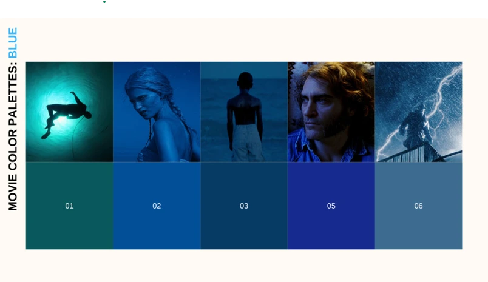
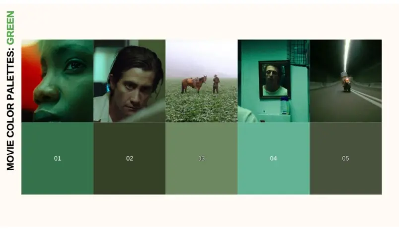
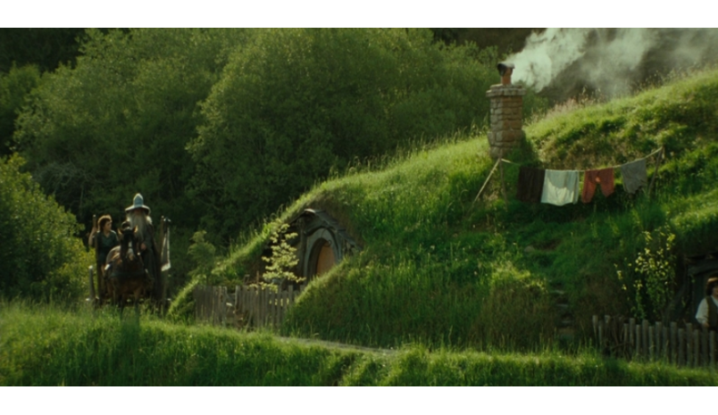
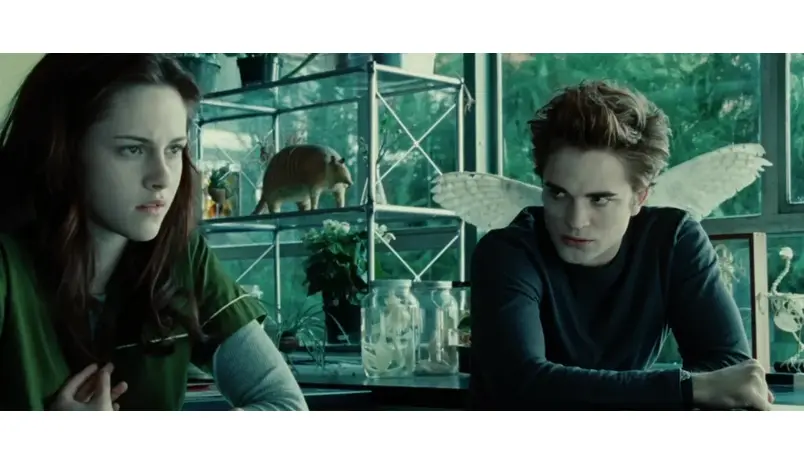
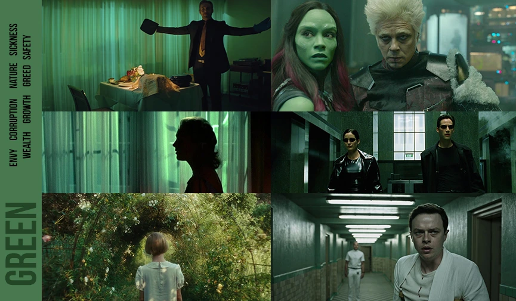
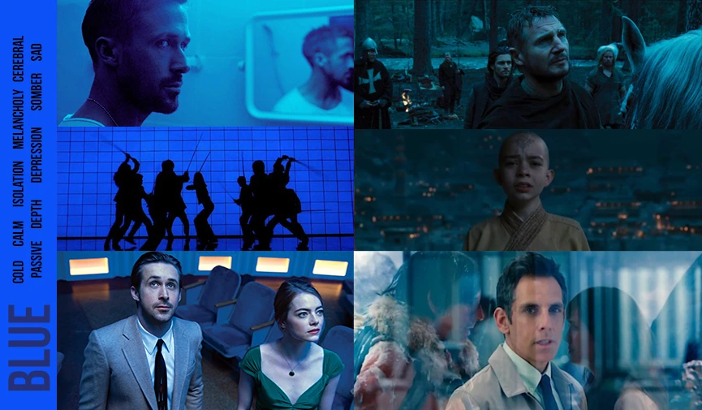
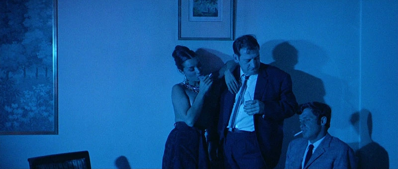
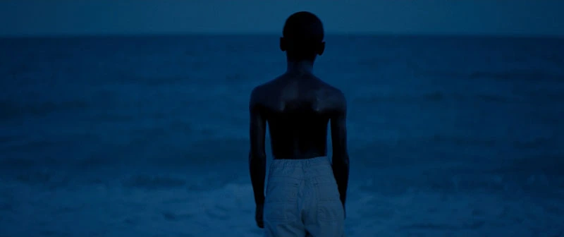
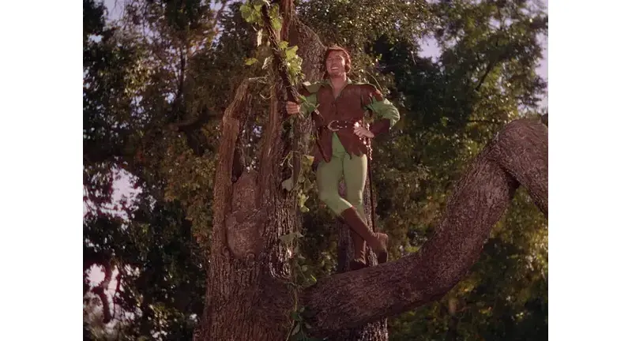
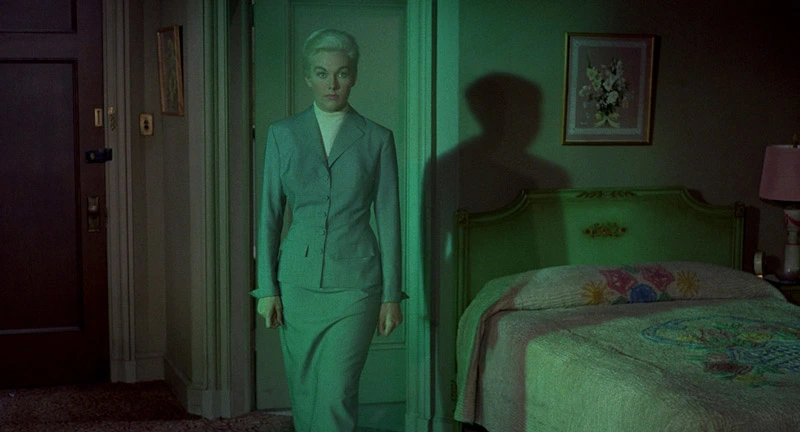

Green and Blue
in Movies




Meaning
A set of priniciples that combine science and art to understand how colors interact, mix, and affect human emotions and perceptions.
The colors a filmmaker chooses aren't just aesthetic decisions. They're storytelling decisions. They tell us who a character is, what a world feels like, and where the emotion of a scene is headed. Color triggers emotional and psychological responses that are almost involuntary. In general, warm tones like reds, oranges, and ambers tend to feel energetic, intimate, or dangerous depending on context. Cool tones, like blues, greens, grays, can read as calm, melancholy, clinical, or otherworldly. Within each color are a multitude of hues you can break down even further to specifically hone in on the exact level of emotion you're seeking.

- Green
- Happiness
- Caution
- Energy
- Danger
- Naivety
- Sickness

- Blue
- Warmth
- Sociability
- Friendly
- Happiness
- Exotic
- Youth
Color in Wicked
Designer Susan Hilferty
Wicked symbolizes her status as an outcast, representing the "other" and the prejudices she faces. It signifies her unique nature and power, challenging societal norms and serving as a metaphor for racism, marginalization, and the dangers of propaganda.
Watch MovieThe Usage of Blue in Avatar
Avatar (2009)
The blue coloration of the Na'vi in Avatar is primarily a deliberate creative choice by James Cameron to distinguish them from traditional green sci-fi aliens. Influenced by Hindu deities, the color signifies a spiritual, exotic nature while avoiding earthly racial parallels.
Watch MovieImportant Examples
The best way to understand is to see how it's used in major movies and TV shows.
Blue and green color theory is vital in filmmaking for establishing mood, psychology, and thematic depth. Blue generally represents calmness, sadness, or coldness, while green often signifies nature, envy, or decay. These cool tones are used to create emotional resonance, contrast with warm skin tones, and establish environmental atmospheres, such as intimacy or isolation.

Pierrot le Fou
In Pierrot le Fou (1965), blue becomes a dominant, almost overwhelming presence, often flooding entire scenes. This isn’t a naturalistic blue; it’s a stylized, heightened blue that reflects the film’s themes of alienation, existential angst, and the search for meaning in a chaotic world.

Moonlight
In Moonlight (2016), blue becomes almost synonymous with Chiron (Ashton Sanders), the film’s protagonist, across three distinct stages of his life. The film’s title itself alludes to the color’s significance. The blue-tinged moonlight that bathes key scenes represents moments of vulnerability, intimacy, and self-discovery.

The Adventures of Robin Hood
Early Technicolor films often used green in a relatively straightforward way, emphasizing its association with nature and the outdoors. The Adventures of Robin Hood (1938), for example, features lush green forests that serve as both a setting and a symbol of Robin Hood’s connection to the natural world and his fight for freedom.

Vertigo
In Vertigo, green becomes almost an obsession, a visual manifestation of mystery, illusion, and the haunting presence of Madeleine. This isn’t the green of nature. It’s an artificial, unsettling green, suggesting a world that’s not quite real, a world shaped by obsession and deception. The green becomes a visual cue, a warning sign, and a symbol of the dangerous allure of the past.